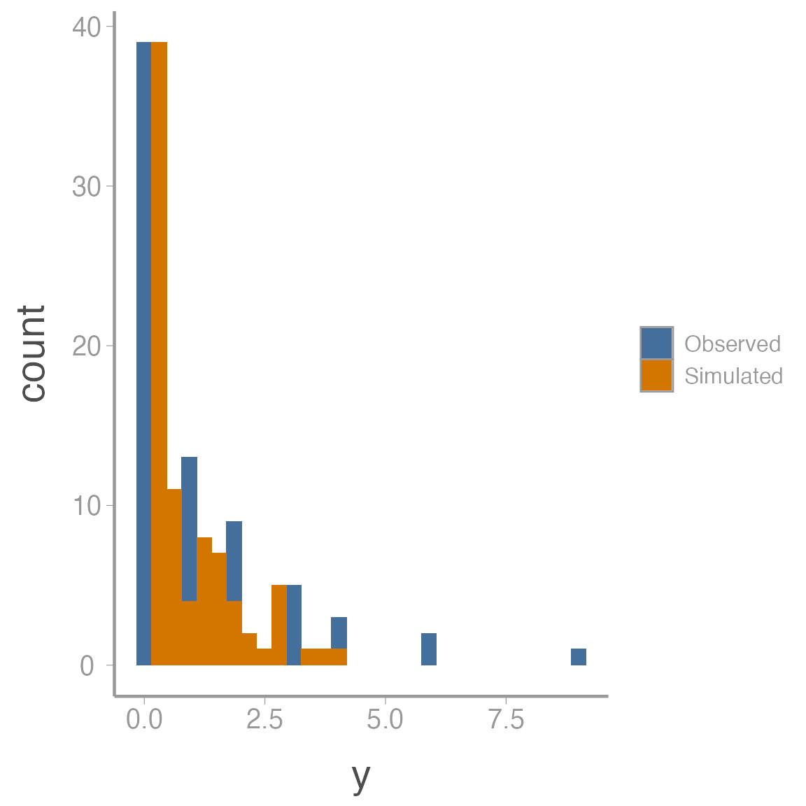

Advanced N-mixture models
WILD6900
2021-01-05
n-mixture2.RmdIn this lab, we will continue to explore some of the possible ways to model count data using N-mixture models. Specifically, we will investigate how to deal with zero-inflated count data, which commonly occurs in ecological data. We will also learn about one way to measure goodness-of-fit (GOF) in a Bayesian context, so-called posterior predictive checks.
The data
For this lab, we will use a published data set1 containing replicate counts of Lanza’s Alpine Salamander (Salamandra lanzai), an endemic species to the Alps of northwestern Italy and eastern France, found only in a small area with altitudes of 1200–2650 m.

You can load the data using:
| ID | nsal1 | nsal2 | nsal3 | Hour1 | Hour2 | Hour3 |
|---|---|---|---|---|---|---|
| p01 | 0 | 0 | 0 | 22.90 | 24.00 | 24.00 |
| p02 | 0 | 0 | 0 | 23.00 | 23.70 | 23.70 |
| p03 | 0 | 0 | 0 | 22.50 | 23.50 | 23.00 |
| p04 | 0 | 0 | NA | 22.25 | 23.25 | NA |
| p05 | 0 | 0 | NA | 22.00 | 23.00 | NA |
| p06 | NA | 0 | 0 | NA | 22.75 | 21.75 |
A maximum of 3 surveys were conducted at 28 sites. We can covert columns 2-4 into a \(28 \times 3\) matrix so that the data can go into JAGS:
### Store counts as JxK matrix
y <- as.matrix(salamanders[,2:4])The researchers also recorded the time of the survey, which allows us to model detection probability as a function of time (it’s seems reasonable to assume that detection probability might change through the nighttime hours that salamander counts were conducted). In order to use these data as predictors in the model, however, we need to fill in the missing values. There are multiple ways to do this but we will simply replace the NA values with the mean survey time:
Posterior predictive checks
During the last lecture, we discussed the assumptions of the basic Poisson N-mixture model. However, we did not discuss how to check whether our data might violate one or more of these assumptions. In fact, one issue we have not discussed yet this semester is goodness-of-fit testing in a Bayesian context. Bayesian model checking is a large and evolving field (see this paper for a good overview of different model checking methods). We do not have time to explore these ideas in depth, though they are important so if you continue using Bayesian methods, you should take the time to learn more about these concepts.
The form of model checking that we will use here is called posterior predictive checks. The idea is relatively straightforward:
if the model is a good description of the true state and observation processes, then data simulated from the joint posterior distribution should be consistent with the real data
Put another way, if our data violate one or more of the model assumptions, we would expect the simulated data to differ from the real data in some systematic way (e.g., to many/to few zeros, over-dispersion).
Posterior predictive checks involve 5 steps:
Define a test statistic \(T\) that has power to diagnose violations of one or more model assumptions
Calculate \(T\) for the observed data: \(T(y)\)
For each sample from the joint posterior distribution, simulate new data \(y^{rep}\)
Calculate \(T\) for each \(y^{rep}\) draw from the posterior predictive distribution: \(T(y^{rep}|y)\)
Calculate the proportion of times \(T(y^{rep}|y)>T(y)\). This proportion is called a Bayesian p-value
In general, Bayesian p-values close to 0 or 1 indicate lack of fit.
If these ideas seem a little confusing, that’s ok. Walking through these steps with our N-mixture model will hopefully help clarify how the process works. First, let’s define a test statistic. One common test statistic is the \(\chi^2\) discrepancy, which measures on average how far each observed data point is from it’s expected value:
\[\large T(y) = \sum_{i=1}^n \frac{(y_i - E(y_i))^2}{E(y_i)}\]
For each posterior sample, we can estimate this discrepancy for the observed data conditional on the current values of \(\lambda\) and \(p\) (or the current values of regression parameters if we are modeling \(\lambda\) and/or \(p\) as a function of covariates).
One reason that posterior predictive checking is so appealing is that we can generate the simulate values directly inside of our MCMC. At each iteration, we simulate the \(y^{rep}\) values from the likelihood function based on the current values of \(\lambda\) and \(p\). In the N-mixture model, that means:
\[\large y_{i}^{rep} \sim binomial(N_i, p_{i})\]
We then estimate \(T(y^{rep}|y)\) using the same discrepancy metric:
\[\large T(y^{rep}) = \sum_{i=1}^n \frac{(y_i^{rep} - E(y_i))^2}{E(y_i)}\]
If we monitor \(T(y)\) and \(T(y^{rep})\), we can estimate the Bayesian p-value directly from the posterior samples of these two parameters.
Putting PPC into practice
Let’s first add the posterior predictive check code to the basic N-mixture model we saw in the last class (but this time with a covariate on \(p\):
sink("jags/salamander_Nmixture.jags")
cat("
model{
# Priors
lambda ~ dgamma(0.25, 0.25)
beta0 ~ dnorm(0, 0.1)
beta1 ~ dnorm(0, 0.1)
# Likelihood
for(j in 1:J){
N[j] ~ dpois(lambda)
for(k in 1:K){
y[j, k] ~ dbinom(p[j, k], N[j])
logit(p[j, k]) <- beta0 + beta1 * hours[j,k]
## Expected count at site j, survey k
exp[j, k] <- N[j] * p[j, k]
## Discrepancy
## (note small value added to denominator to avoid potential divide by zero)
E[j, k] <- pow((y[j, k] - exp[j, k]), 2) / (exp[j, k] + 0.5)
## Simulate new count from model
y.rep[j, k] ~ dbinom(p[j, k], N[j])
## Discrepancy
E.rep[j, k] <- pow((y.rep[j, k] - exp[j, k]), 2) / (exp[j, k] + 0.5)
} # end k loop
} # end j loop
# chi-squared test statistics
fit <- sum(E[,])
fit.rep <- sum(E.rep[,])
}
", fill = TRUE)
sink()With the code ready, we can fit the model2:
## Bundle data
jags_dat <- list(y = y, hours = hours_c, J = dim(y)[1], K = dim(y)[2])
## Initial values (see footnote)
inits <- function(){list(lambda = runif(0, 3),
beta0 = rnorm(1), beta1 = rnorm(1),
N = apply(y, 1, max, na.rm = TRUE) + 1)}
## Parameters to save
parameters <- c("lambda", "beta0", "beta1", "N", "fit", "fit.rep")
## MCMC settings
ni <- 10000
nc <- 3
nb <- 2500
nt <- 1
## Fit model
sal_fit1 <- jagsUI::jags(data = jags_dat, inits = inits, parameters.to.save = parameters,
model.file = "inst/jags/salamander_Nmixture.jags",
n.chains = nc, n.iter = ni, n.burnin = nb, n.thin = nt,
parallel = TRUE)If your model doesn’t converge, try bumping up the number of iterations.
Posterior predictive checks
To check the model fit, let’s first estimate the Bayesian p-value:
mean(sal_fit1$sims.list$fit.rep > sal_fit1$sims.list$fit)
#> [1] 0.001111Note that testing whether fit. is greater than fit will return a vector of 1’s (TRUE) and 0’s (FALSE) so the mean of this vector is the proportion of samples where the discrepancy of the simulated data was greater than the discrepancy of the observed data.
We can also visualize these data:

If the simulate data is comparable to the observed data, the line should pass right through the middle of the points (50% larger, 50% smaller). In this case, both the plot and the p-value clearly our model is not a good fit.
To get a sense of what’s causing the lack of fit, we can also plot the observed and simulated data side by side:
fit_df <- data.frame(y = c(c(y), c(sal_fit1$mean$y.rep)),
data = rep(c("Observed", "Simulated"), each = length(y)))
ggplot(fit_df, aes(x = y, fill = data)) + geom_histogram()
The observed data show a classic zero-inflated pattern - lots of zeros but also some values that are relatively large. The simulated data is trying to fit both the zeros and the non-zeros into a single Poisson distribution so it estimates a very small \(\lambda\) (all the 0’s pull it down) but then that small expected values doesn’t allow for the larger counts in the observed data (remember that the variance of the Poisson distribution is \(\lambda\) so small expected value means small variance)
Zero-inflated N-mixture model
We can model the excess zeros by adding another layer of hierarchy to the model. Basically, we assume that many of the sites are uninhabited by the salamander (perhaps they are not suitable habitat). So we need to first estimate which sites are inhabited and then model the expected number of salamanders conditional on the site being occupied:
\[\large z_j \sim Bernoulli(\omega)\] \[\large N_j|z_j \sim Poisson(z_j \times \lambda)\]
\[\large y_{j,k} \sim binomial(N_j, p_{j,k})\] \[\large logit(p_{j,k}) = \beta_0 + \beta_1 \times hours_{j,k}\]
where \(\omega\) is the probability that a site is occupied. Note that by multiplying \(\lambda\) by \(z_j\), we ensure that if the site is not occupied (\(z_j=0\)), abundance at that site is 0.
Tweaking the model to accommodate this zero-inflation is straightforward:
sink("jags/salamander_Nmixture_ZIP.jags")
cat("
model{
# Priors
omega ~ dbeta(1, 1)
lambda ~ dgamma(0.25, 0.25)
beta0 ~ dnorm(0, 0.1)
beta1 ~ dnorm(0, 0.1)
# Likelihood
for(j in 1:J){
z[j] ~ dbern(omega)
N[j] ~ dpois(lambda * z[j])
for(k in 1:K){
y[j, k] ~ dbinom(p[j, k], N[j])
logit(p[j, k]) <- beta0 + beta1 * hours[j,k]
exp[j, k] <- N[j] * p[j, k]
E[j, k] <- pow((y[j, k] - exp[j, k]), 2) / (exp[j, k] + 0.5)
y.rep[j, k] ~ dbinom(p[j, k], N[j])
E.rep[j, k] <- pow((y.rep[j, k] - exp[j, k]), 2) / (exp[j, k] + 0.5)
} # end k loop
} # end j loop
# Derived variables
fit <- sum(E[,])
fit.rep <- sum(E.rep[,])
}
", fill = TRUE)
sink()And fitting the model is the same as before (but with one additional initial value):
jags_dat <- list(y = y, hours = hours_c, J = dim(y)[1], K = dim(y)[2])
inits <- function(){list(lambda = runif(1, 8, 10),
omega = runif(1, 0.5, 0.7),
beta0 = rnorm(1), beta1 = rnorm(1),
N = apply(y, 1, max, na.rm = TRUE))}
parameters <- c("omega", "lambda", "beta0", "beta1", "N", "fit", "fit.rep", "y.rep")
ni <- 10000
nc <- 3
nb <- 2500
nt <- 1
sal_fit2 <- jagsUI::jags(data = jags_dat, inits = inits, parameters.to.save = parameters,
model.file = "jags/salamander_Nmixture_ZIP.jags",
n.chains = nc, n.iter = ni, n.burnin = nb, n.thin = nt,
parallel = TRUE)Posterior predictive checks
Now we can check the fit of the zero-inflated model:
mean(sal_fit2$sims.list$fit.rep > sal_fit2$sims.list$fit)
#> [1] 0.01298
plot(sal_fit2$sims.list$fit.rep~sal_fit2$sims.list$fit)
abline(0, 1)
Hmm, a little better but still pretty poor fit.
fit_df <- data.frame(y = c(c(y), c(sal_fit2$mean$y.rep)),
data = rep(c("Observed", "Simulated"), each = length(y)))
ggplot(fit_df, aes(x = y, fill = data)) + geom_histogram()
Over-dispersion in \(p\)
In addition to an excess zeros being caused by the state process (some site are truly unoccupied), it’s also possible that detection probability caused some of the over-dispersion \(-\) some sites may have simply had much higher or lower detection probability than predicted by our linear effect of hour.
We can try to account for this source of variability by including a random survey effect in the observation model:
\[\large logit(p_{j,k}) = \beta_0 + \beta_1 \times hours_{j,k} + \epsilon_{j,k}\]
\[\large \epsilon_{j,k} \sim normal(0, \tau_p)\]
sink("jags/salamander_Nmixture_ZIP_OD.jags")
cat("
model{
# Priors
omega ~ dbeta(1, 1)
lambda ~ dgamma(0.25, 0.25)
beta0 ~ dnorm(0, 0.1)
beta1 ~ dnorm(0, 0.1)
tau.p <- pow(sd.p, -2)
sd.p ~ dunif(0, 3)
# Likelihood
for(j in 1:J){
z[j] ~ dbern(omega)
N[j] ~ dpois(lambda * z[j])
for(k in 1:K){
y[j, k] ~ dbinom(p[j, k], N[j])
logit(p[j, k]) <- lp[j, k]
mu.lp[j, k] <- beta0 + beta1 * hours[j,k]
lp[j, k] ~ dnorm(mu.lp[j, k], tau.p)
exp[j, k] <- N[j] * p[j, k]
E[j, k] <- pow((y[j, k] - exp[j, k]), 2) / (exp[j, k] + 0.5)
y.rep[j, k] ~ dbinom(p[j, k], N[j])
E.rep[j, k] <- pow((y.rep[j, k] - exp[j, k]), 2) / (exp[j, k] + 0.5)
} # end k loop
} # end j loop
# Derived variables
fit <- sum(E[,])
fit.rep <- sum(E.rep[,])
}
", fill = TRUE)
sink()And fit the new model:
jags_dat <- list(y = y, hours = hours_c, J = dim(y)[1], K = dim(y)[2])
inits <- function(){list(lambda = runif(1, 8, 10),
omega = runif(1, 0.5, 0.7),
sd.p = runif(0, 0.25),
beta0 = rnorm(1), beta1 = rnorm(1),
N = apply(y, 1, max, na.rm = TRUE))}
parameters <- c("omega", "lambda", "beta0", "beta1", "N", "fit", "fit.rep")
ni <- 10000
nc <- 3
nb <- 2500
nt <- 1
sal_fit3 <- jagsUI::jags(data = jags_dat, inits = inits, parameters.to.save = parameters,
model.file = "jags/salamander_Nmixture_ZIP_OD.jags",
n.chains = nc, n.iter = ni, n.burnin = nb, n.thin = nt,
parallel = TRUE)Posterior predictive checks
Now we can check the fit of the model with over-dispersion in both the abundance and observation models:
mean(sal_fit3$sims.list$fit.rep > sal_fit3$sims.list$fit)
#> [1] 0.4852
plot(sal_fit3$sims.list$fit.rep~sal_fit3$sims.list$fit)
abline(0, 1)Much better!
Final note
Although there is no evidence of lack of fit in this final model, that does not mean that our data do not violate the assumptions of the model. For one, posterior predictive checks are often too conservative \(-\) this is, they often fail to detect violations even when they occur. Second, we have only used a single discrepancy metric which therefore limits that range of assumption violations we could detect. We could also derive statistics that specifically measure the proportion of zeros, or the frequency of extreme values, or many more violations. In short, although it’s good that this model does not appear to have any obvious lack-of-fit, we should still use caution when interpreting results and perhaps use additional tests before we are satisfied.
Ficetola, G.F., Barzaghi, B., Melotto, A., Muraro, M., Lunghi, E., Canedoli, C., Parrino, E.L., Nanni, V., Silva-Rocha, I., Urso, A. and Carretero, M.A., 2018. N-mixture models reliably estimate the abundance of small vertebrates. Scientific reports, 8(1), p.10357.↩︎
Note that this model can be a bit picky about initial values. Good initial values for \(N\) are particularly important but sometimes it appears that if the initial values for the other parameters are too far from their true value, the model with throw an error (something about
invalid parent node). I tried to experiment with different initial value functions but you may need to make some tweaks if you get an error↩︎